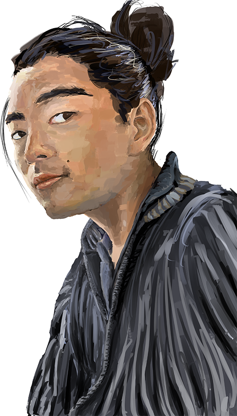

profile

竹中 碧takenaka aoi
aaoooii0219@gmail.com
1997年京都府北部生まれ。
国立清水海上技術短期大学校を卒業後、東栄汽船株式会社に就職。
船舶の機関・機器装置の保守管理に携わる。休暇中、美大生である友人に再開し在学時から秘めていた創作的職業への憧れがこみ上がり、たまらなくなりwebの道に進む。2020年3月にデジタルハリウッド大阪校の受講を修了し、現在自己学習＆就活の日々に励む。
自己PR
粘り強さは誰にも負けません。
卒業制作のコーディング際、なかなか実現できないCSSがありました。ミスコードを探しても見つからない、検索をかけても当たらない…。焦燥感と投げ出したくなる気持ちが募る中、それでも諦めてなるものかという負けん気で最後までやり遂げることができました。与えられた業務が難問であっても奮闘し最後まで「できる」と信じて遂行することができます。
status
works
-
実装中
『晴明丘夏祭り』 地域イベントサイト
大阪阿倍野区晴明丘地区の夏祭りのサイトです。子どもがメインのお祭りなのでポップでにぎやかな印象を出しています。一方で、伝統あるお祭りなので和風の渋さも念頭に入れバランスをとった色味にしています。また、メインビジュアルに工夫をこしらえ、スライド時に写真に覆われるような演出にしました。
-
『スグ食べ』 宅配サービスサイト
デジタルハリウッドのスクール課題サイトです。人生初のサイトのデザインをしました。デザインを生むことの苦しみと完成した時の喜びを味わいました。カルチャーショックでした。デザインを作る際、コーディングのことも十分に頭に入れないと完成に時間がかかり、非効率となることを反省点として得ました。
-
『8hours』 衣類通販サイト
デジタルハリウッドのスクール課題サイトです。ハンバーガーメニューやホバー時などのアニメーションCSSを当サイト制作で学習しました。この時動的な作用を習いながらも作ることができ、コーディングの楽しみを感じることができました。
-
『RCUデザイン』 アプリ宣伝サイト
ジタルハリウッドのスクール課題サイトです。cssを本格的に学ぶことの始まりとなったサイトです。positionやback-ground-imagesの習得が当時は大変でしたがその分反作用的に追究に励んだため何とかのりこえることができました。
practice
日々励んでいる練習の中の模写の成果物を掲載いたします。

模写
<!DOCTYPE html>
<html lang="ja">
<head>
<meta charset="UTF-8">
<meta name="viewport" content="width=device-width, initial-scale=1.0">
<meta http-equiv="X-UA-Compatible" content="ie=edge">
<link href="https://use.fontawesome.com/releases/v5.6.1/css/all.css"
rel="stylesheet">
<link rel="stylesheet" href="css/reset.css">
<link rel="stylesheet" href="css/style.css">
<title>鶴弥の防災瓦なら地震も台風も怖くない。</title>
</head>
<body>
<header>
<h1><img src="images/header/logo.png" alt="鶴弥"></h1>
</header>
<div class="main-visual">
<p class="mv"><img src="images/header/mainImg-pc.png" alt=""><
/p>
</div>
<div class="body-inner">
<div class="mv-section">
<h2><img src="images/header/hd_index_001-pc.png" alt=""><
/h2>
<ul>
<li>
<h3>耐久性編</h3>
<div class="pray">
<p>動画</p>
</div>
</li>
<li>
<h3>防災性編</h3>
<div class="pray">
<p>動画</p>
</div>
</li>
</ul>
<p class="mv-text">日本の屋根といえば「瓦」。でも最近は「地震に弱い」
という誤解の声がちらほら…。<br>そんな今こそ、進化した瓦「防災瓦」がオススメです。<br>熊本地震の調査結果によると、以前の瓦の屋根にはたくさんのズレ・
脱落が見つかりましたが、「防災瓦」の屋根にはほとんど被害が見当たりませんでした。
<br>では、防災瓦は一体何が違うのか…。そのヒミツ、お教えします！</p>
<div class="btn-list-wrapper">
<ul class="btn-list">
<li>
<a href="#" class="btn"><i class="fas fa-chevron-right arow"></i>鶴弥コーポレートサイトへ</a>
</li>
<li>
<a href="#" class="btn "><i class="fas fa-chevron-right arow"></i>資料請求</a>
</li>
</ul>
</div>
</div>
<section class="section1">
<ul>
<li>
<img src="images/section1/img_index_001-pc.png" alt="">
<p class="section1-text">以前の土葺き工法のように重い土を使わず、屋根重量を約半分程度に軽量化しました。</p>
</li>
/* box */
.box{
border: 4px solid #b5c9b0;
border-radius: 20px;
background-color: #fff;
background-size: 12px 12px;
background-image: radial-gradient(#e6e6e6 22%, transparent 22%),
radial-gradient(#e6e6e6 22%, transparent 22%);
background-position: 0 0, 6px 6px;
}
/* /box */
/* header */
header{
padding-top: 20px;
max-width: 980px;
margin: 0 auto;
}
.mv-section h2{
margin-bottom: 40px;
}
.mv-section h3{
font-size: 2.4rem;
}
.mv-section ul{
margin-bottom: 75px;
}
.mv-section li{
flex: 48%;
}
.mv-section h3{
text-align: center;
margin-bottom: 10px;
}
.pray{
width: 95%;
max-height: 262px;
background-color: #444;
color: #fff;
font-size: 2.4rem;
line-height: 262px;
text-align: center;
margin: 0 auto;
}
.mv-text {
line-height: 1.85;
margin-bottom: 60px;
}
/* /header */
/* section1 */
.section1{
margin-bottom: 75px;
}
.section1 li{
flex: 33%;
padding: 0 10px;
}
.section1-text{
padding: 10px 20px;
padding-bottom: 20px;
line-height: 1.5;
background-color: #fff;
}
/* /section1 */
Stop Watch
おみくじ
Slot Machine
Typing Game
Parallax
Modal Window
Quiz
hobby
趣味で描いている絵を紹介します。